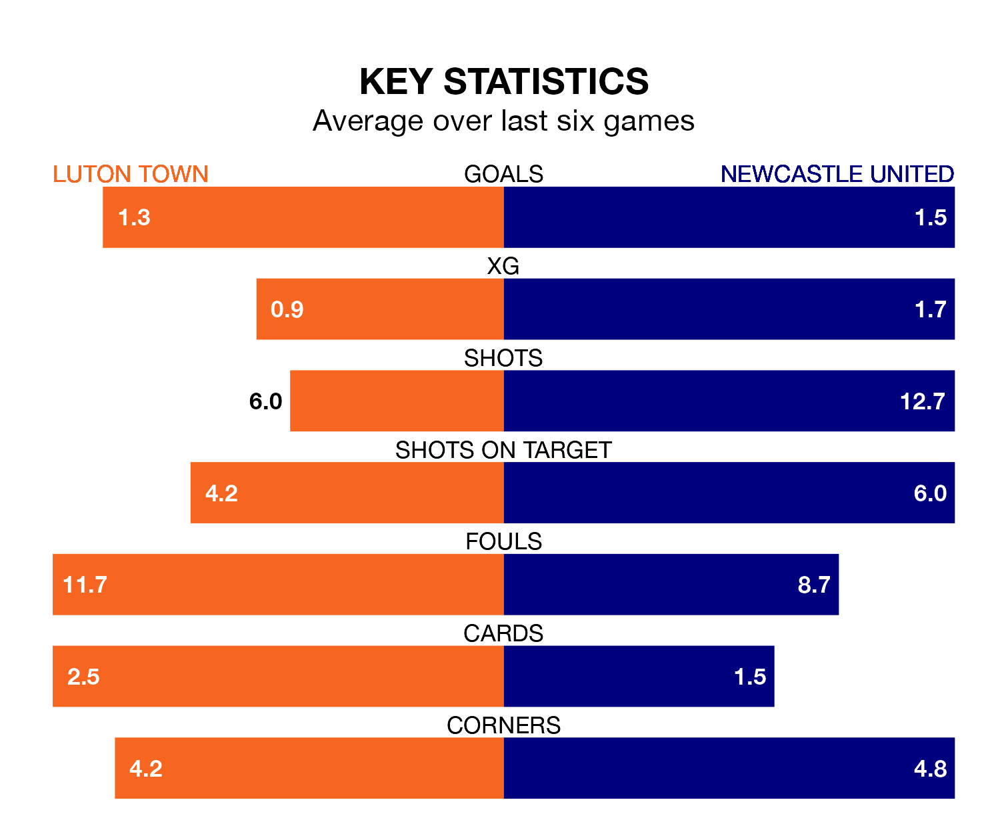

Newcastle United are strong favourites to take all three points despite Luton Town's home advantage in Saturday's match at Kenilworth Road.
*Betting Company* are offering odds of 1.32 on Newcastle sealing the win, with the visitors sitting sixth in the Premier League table.
Luton, who are 18th in the league and 20 points behind the Magpies, are priced at 6.5 to win. A draw is set at 5.5.
With 36 goals in 17 games so far this season, Newcastle are the league's joint-third-highest scorers with 2.1 goals per game. And they are conceding fewer than average, letting in 21 goals at a rate of 1.2 per game.
Luton, meanwhile, are below average scorers, with 1.1 goals per game, compared to a league average of 1.5. They have conceded 2.0 goals per game.
United's Kieran Trippier is the league's most creative player, racking up seven assists in 16 appearances so far this season.
For Town, Alfie Doughty has set up the most goals, having laid on three assists in 15 games.
The Hatters are in bad form in the Premier League, with one win and a draw from their last six games.
With three wins and three losses over that period, the Magpies' form is better – they have taken nine points from 18, compared to the hosts' four.
Luton's last match was on December 10, a 2-1 loss against Manchester City, with Elijah Adebayo getting the goal for the Hatters.
Newcastle beat Fulham 3-0 last time out, on December 16, with Dan Burn, Lewis Miley and Miguel Almirón on the scoresheet.
